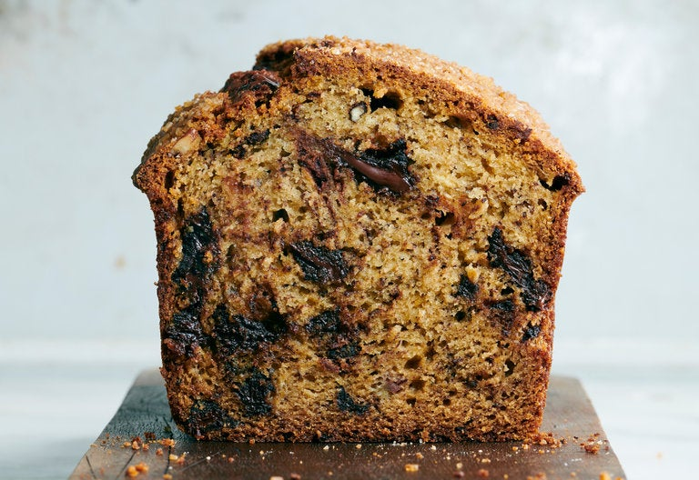

Banana Bread

This recipe uses four bananas, which is more than is typical for a single loaf. The natural sugars from the ripe, brown bananas keep the bread incredibly moist for up to one week, even sliced. The high moisture of the batter can make it tricky to determine doneness, so take care not to underbake the the loaf. It should have a dry, shiny, cracked surface, and a tester inserted into the thickest portion should come out with a few moist crumbs attached. Serve this banana bread for breakfast or brunch, or even as a simple dessert, topped with a scoop of coffee ice cream.
3-4very ripe medium bananas, peeled6 tbsp (85g)unsalted butter, melted⅓ cup (80ml/80g)plain Greek yogurt1 cup (220g)light or dark brown sugar2 largeeggs2 tspvanilla extract2 cups (250g)all-purpose flour1½ tspbaking soda½ tspfine sea salt1 cup (135g)finely chopped chocolate or mini chocolate chips¾ cup (130g)coarsely chopped toasted nuts, such as almonds, walnuts or pecans (optional)
Heat the oven to 350 degrees. Lightly grease a 9-by-5-inch loaf pan with nonstick spray.
In a large bowl, mash the bananas coarsely using a fork. They should be fully broken apart, but it’s OK if some larger lumpy pieces remain. Whisk in the melted butter, yogurt, brown sugar, eggs and vanilla until well combined.
In a medium bowl, whisk the flour, baking soda and salt to combine. Add the flour mixture to the banana mixture and stir to combine using a silicone spatula or wooden spoon. Scrape the sides and base of the bowl well to make sure the mixture is uniformly combined.
Gently stir in the chocolate until combined, then pour the batter into the prepared loaf pan and spread into an even layer. If using, sprinkle the surface generously with coarse sugar.
Transfer the pan to the oven and bake until the edges of the loaf start to pull away from the edge of the pan, and a tester inserted into the center comes out with just a few moist crumbs attached, 60 minutes. If the top of the loaf is becoming too dark before it’s baked through, loosely cover with foil.
Transfer from the oven to a cooling rack and run a thin knife around the edge of the banana bread to separate it from the pan. Let cool in the pan for 10 minutes before unmolding and cooling completely.